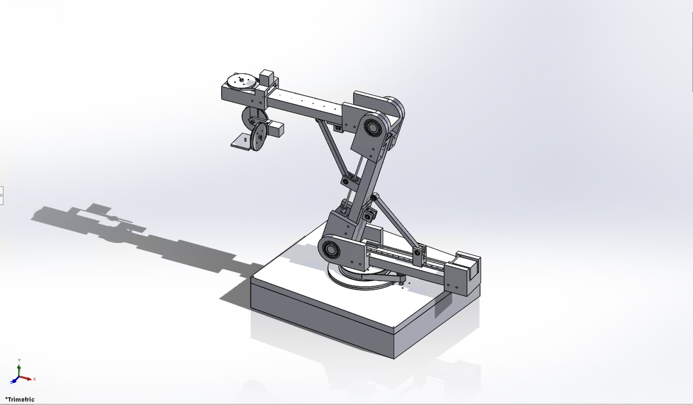

Robotic Arm for Cinematography

The brief
The client wanted a way for hobbyist and beginner cinematographers to get smooth, sweeping camera moves without paying for professional equipment. Track dollies and Steadicam rigs cost $100K–$500K+, are heavy, and need multiple operators to run — completely out of reach for someone shooting on a modest budget.
They needed a robotic arm that could mount a lightweight camera, cover a large working area for sweeping shots, and repeat those cinematic moves reliably, at a fraction of the cost of the professional alternatives.
A low-cost, long-reach robot arm that lets a lightweight camera be moved smoothly through large, repeatable sweeps — sized and priced for an advanced hobbyist or beginner professional, not a studio budget.
Research & specification
I started by surveying commercial and open-source/hobby arm designs, benchmarking reach, payload, and cost against what the DIY community was already building. Most industrial arms are optimized for manufacturing — short reach relative to footprint, brute-force motors, high cost — so a direct copy wasn't going to work. That research set the engineering specification the rest of the design was checked against:
Design process
From the specification, I developed and compared several candidate arm geometries and joint configurations — different degrees-of-freedom layouts, different structural approaches — before converging on a final design. Early candidates were deliberately divergent to explore the solution space; later iterations narrowed in on the combination of reach, motion smoothness, and cost that best matched the brief.
Where possible I specified standardized structural extrusion and hobby-grade motors to keep the bill of materials low and serviceable with common replacement parts. Custom 3D-printed and CNC parts were reserved for the joints, where fit and function mattered most and off-the-shelf options fell short.
Gallery


Outcome
The deliverable is a full CAD assembly with detailed engineering drawings, a parts list referencing standard components, and supporting calculations validating that the design meets the client's reach, payload, and cost targets — ready to move into detailed design and prototyping.